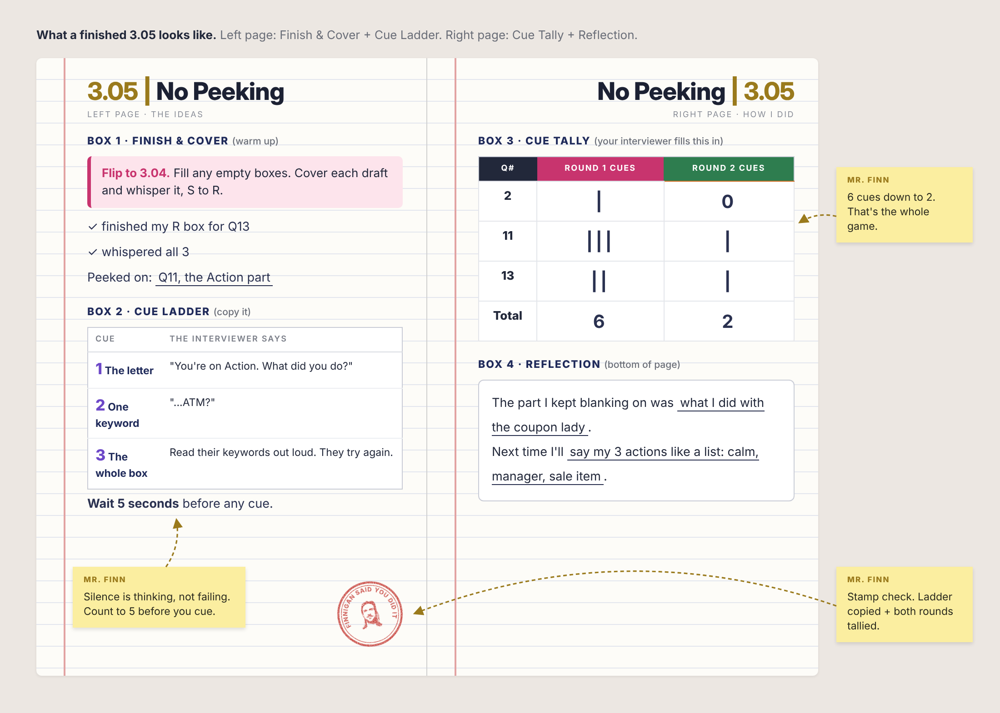

3.05 | No Peeking
Purpose
Yesterday you drafted 3 STAR stories.
Today you tell them with your notebook in someone else's hands.
Real interviews don't come with notes.
Your partner's cues are training wheels. The goal is fewer of them.
What a Finished Notebook Looks Like
Click the image to see it full size.

I. Finish & Cover
Flip to your 3.04 drafts.
- Any empty boxes? Fill them now. You can't remember what you never wrote.
- Read one draft. Cover it with your hand.
- Whisper it to yourself, S to R. Peek only if you're stuck.
- Repeat for the other two.
II. The Cue Ladder
When your partner blanks, don't hand them the answer. Climb the ladder, smallest cue first.
Copy this
| Cue | The interviewer says |
|---|---|
| 1 The letter | "You're on Action. What did you do?" |
| 2 One keyword | "...ATM?" |
| 3 The whole box | Read their keywords out loud. They try again. |
Wait 5 seconds before any cue. Silence feels long. Thinking needs it.
Watch it work
Interviewer: Tell me about a time you were under pressure.
Candidate: Okay, so I worked my uncle's taco truck, and the card reader died at lunch... and, um...
(5 seconds.)
Interviewer: You're on Action. What did you do?
Candidate: I put up a sign... um...
Interviewer: ...ATM?
Candidate: Right! I sent people to the ATM across the street and wrote orders on paper.
Two cues. Tally: 2.
III. Round 1
- Candidate: open to your 3.04 drafts and hand over your notebook. Hands off.
- Interviewer: ask one of their drafted questions. Follow along in their table.
- Candidate: answer with STAR.
- Stuck? Wait 5 seconds, then climb the ladder.
- Interviewer: flip to their 3.05 right page and tally the cues.
All 3 questions, then switch roles.
Cue Tally
| Q # | Round 1 cues | Round 2 cues |
|---|---|---|
IV. Round 2
New partner. Same 3 questions. Beat your Round 1 cue count.
V. Reflection
Next time I'll .
Success Looks Like
- 3.04 drafts finished
- Cue Ladder copied
- 3 questions answered, twice
- Cue Tally and Reflection filled in